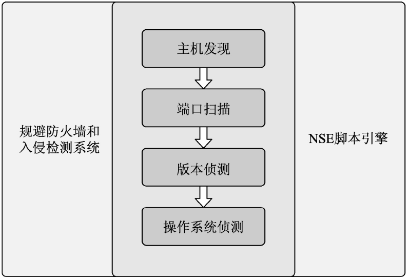
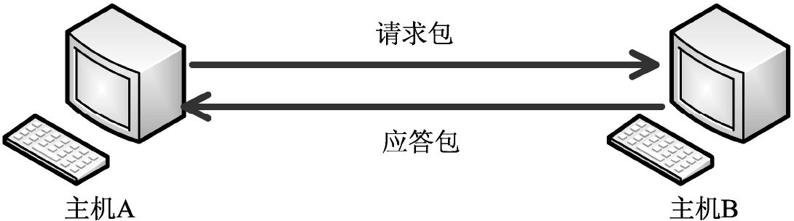
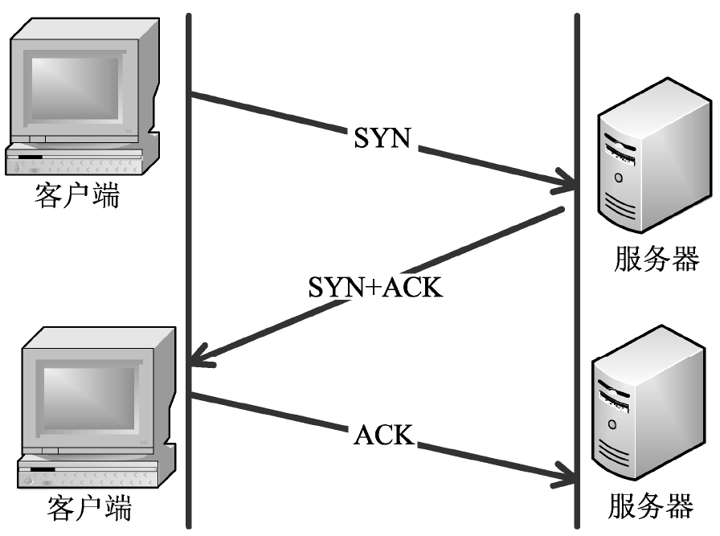
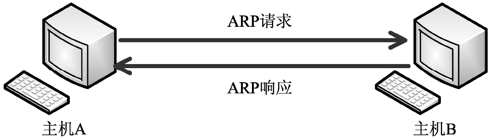

Nmap—诸神之眼
本文最后更新于：2021年9月28日 下午
概述
Nmap概述网络映射器（Network Mapper，Nmap）是一个免费开源的网络扫描和嗅探工具，可以用来扫描计算机上开放的端口，确定哪些服务运行在哪些端口，并且推断出计算机运行的操作系统。利用该工具，可以评估网络系统的安全性
功能架构
Nmap主要有4项扫描功能，分别是主机发现、端口扫描、版本侦测和操作系统侦测。

Nmap各功能之间的依赖关系。
（1）确定目标，进行主机发现，找出活动的主机，然后确定活动主机上的端口状况。
（2）根据端口进行扫描。
（3）确定端口上具体运行的应用程序与版本信息。
（4）对版本信息侦测后，再对操作系统进行侦测。
在这4项基本功能的基础上，Nmap还提供了防火墙与入侵检测系统（IntrusionDetection System，IDS）的规避技巧，可以综合应用到4个基本功能的各个阶段。另外，Nmap还提供了强大的NSE（Nmap Scripting Language）脚本引擎功能，可以对基本功能进行补充和扩展，提供漏洞扫描等功能。
工作原理
map通过发包和分析响应包来判断目标主机的状态。为了获取有价值的信息，Nmap会发送特定的包（Probe），并分析响应包的特征信息（指纹）。
1. 探针
探针（Probe）是基于协议功能和特性，使用特定端口和数据载荷所构建的数据包。
2. 指纹信息
指纹信息就是目标主机响应包的特征信息，如ARP应答报文、TCP标志位、ICMP应答报文等。Nmap根据这些指纹信息即可判断主机的状态和端口状态等。
Nmap的扫描类型
Ping扫描：用于发现主机，以探测网络中活动的主机。
TCP SYN扫描：Nmap默认的端口扫描方式，用来探测目标开放的TCP端口。
操作系统识别：用于识别操作系统的指纹信息，如操作系统类型和服务版本等。
端口扫描：用于探测目标主机中开放的端口。
UDP扫描：使用UDP实施扫描，如UDP Ping扫描和UDP端口扫描等。
隐蔽扫描：主要用于规避防火墙，如TCP NULL扫描、TCP FIN扫描、TCP Xmas扫描和FTP转发扫描等。
安装
网上有很多关于Nmap安装的教程，不做介绍。
网络环境
查看网路接口
多主机都具备多个网络接口。为了明确扫描时所使用的接口，Nmap工具提供了选项–iflist，用来查看主机的网络接口和路由信息。
1 | |
网络配置
当确定了当前主机中的网络接口后，即可使用网络调试命令获取网络配置信息。在Windows系统中可以使用ipconfig命令查看网络配置；在Linux系统中可以使用ifconfig命令查看网络配置。
IPv4和IPv6网络
IP地址可以分为IPv4和IPv6两大类，网络也可以分为IPv4网络和IPv6网络。其中，IPv4是Internet Protocol Version 4的缩写，表示IP的第四个版本，IPv6表示IP的第六个版本，是下一代互联网协议。目前，大部分用户使用的IP地址都是IPv4。Nmap工具支持对IPv4和IPv6网络进行扫描，默认扫描的是IPv4网络。如果用户要扫描IPv6网络，则需要使用-6选项启用IPv6扫描功能。
查看帮助
1 | |
确定目标
指定扫描主机的所有IP地址在DNS服务器中，一个域名可以解析到多个IP地址。如果一个域名有多个IP地址时，Nmap默认仅探测第一个IP地址。为了能够探测到所有的IP地址，可以使用–resolve-all选项指定扫描主机中的所有IP地址。
指定单一目标
Nmap可以指定一个IP地址作为渗透测试的目标。指定的IP地址必须是与Nmap所在主机能够互相连通的IP地址。如果目标主机有多块网卡，则每个网卡都有一个IP地址。指定的时候需要确认哪个IP地址是可以连通的。如果用户指定的是本机，则可以指定任意一个IP地址。
1 | |
指定多个主机
指定多个主机的格式可以是CIDR格式、连续主机、不连续主机或列表文件。
CIDR格式
无类别域间路由（Classless Inter-Domain Routing，CIDR）可以将路由集中起来，在路由表中更灵活地定义地址。用户通过使用CIDR格式，可以指定一个网络内的所有主机。
Nmap工具提供了一个-sL选项，可以列出扫描的目标。用户可以使用该选项来验证指定的目标主机范围。该选项及其含义如下：
-sL：列出扫描的目标。
sL是Scan List（扫描列表）的缩写。Nmap扫描类选项的缩写有具体的规定。其中，Scan缩写为小写字母s，特定项目List缩写为大写字母L。
1 | |
连续的主机
如果需要扫描多个IP地址连续的主机，则可以使用连字符格式。在一个IP地址中，连字符可以使用一次或多次。
实施扫描时，可以先使用-sL选项查看指定的连续主机的IP地址，以确定指定的主机范围是否正确。
1 | |
使用列表文件
当主机较多并且不连续时，可以将这些主机保存到一个列表文件中，然后直接使用这个列表文件指定多个主机。
Nmap提供了一个-iL选项用于指定主机列表文件。该选项及其含义如下：
-iL <inputfilename>：指定主机或网络列表文件。
iL是Input from List（从列表中读取）的缩写。
1 | |
指定扫描主机的所有IP地址
在DNS服务器中，一个域名可以解析到多个IP地址。如果一个域名有多个IP地址时，Nmap默认仅探测第一个IP地址。为了能够探测到所有的IP地址，可以使用--resolve-all选项指定扫描主机中的所有IP地址。
1 | |
排除主机被扫描
Nmap提供了两个选项用来排除主机被扫描。这两个选项及其含义如下：
--exclude <host1,host2...>：指定排除的主机。其中，用户可以指定排除单个目标、多个目标或一个目标范围。
--excludefile <exclude_file>：指定排除的主机文件列表。
exclude是排除的意思。
比如，扫描192.168.1.0/24网络中的所有主机，但是不扫描192.168.1.0-100范围内的主机。
1 | |
扫描方法
全部扫描
全部扫描就是对目标主机进行完整、全面的扫描，如主机状态、开放端口、操作系统类型和主机漏洞等。Nmap提供了一个-A选项，可以对目标主机实施全部扫描。该选项及其含义如下：
-A：实施全部扫描，以探测目标主机的操作系统和版本信息。
1 | |
发现主机
发现主机就是指探测网络中活动的主机。发现主机是实施渗透测试的第一步，也是最重要的一步。只有先确定目标主机是活动的，才能进一步实施渗透测试。在Nmap中，可以通过不同的方法来发现主机，如IP发现、ICMP发现、TCP发现和UDP发现等。
IP发现
网际协议（Internet Protocol，IP）是TCP/IP体系中的网络层协议。IP是整个TCP/IP簇的核心，也是构成互联网的基础。IP位于TCP/IP模型的网络层，对上可载送传输层的各种协议信息，如TCP和UDP等；对下可将IP数据包放到链路层，通过以太网和令牌网络等各种技术来传送。
为了标识传输层协议类型，IP报文包含一个字段Protocol，用于保存传输层协议编号。Nmap允许用户基于IP构建探测数据包，用于构建不同类型的传输层数据包。通过字段Protocol，用户可以设置当前包采用哪种传输层协议。一旦目标响应这类数据包，就证明主机存在。这种探测方式称为IP发现。Nmap中的-PO选项可以用来实现IP发现。该选项及其含义如下：
-PO <protocol list>：使用IP数据包探测目标主机是否开启。其中，protocol list是协议编号列表。用户可以指定多个IP编号，如6（TCP）、17（UDP）、1（ICMP）和2（IGMP）。多个编号之间使用逗号分隔。如果没有指定协议，默认协议为1（ICMP）、2（IGMP）和4（IP），等同于-PO1,2,4。
注意：在选项-PO中，O是大写字母O，不是数字0。另外，选项和协议编号之间没有空格。如果指定的协议为ICMP、IGMP、TCP、UDP，则默认添加对应的协议报头作为IP层的数据载荷。如果是其他协议，默认不添加任何数据载荷，除非使用–data、–data-string或者–data-length来指定。
ICMP发现
Internet控制报文协议（Internet Control Message Protocol，ICMP）是TCP/IP簇的一个子协议，用于在IP主机、路由器之间传递控制消息。该协议在网络中的主要作用就是实现主机探测、路由维护、路由选择和流量控制。Nmap工具可以利用该协议来实现主机探测。用户通过使用ICMP请求、ICMP响应、ICMP时间戳和ICMP地址掩码请求4种方式来实现主机发现，以探测活动的主机。
ICMP的工作原理
Ping是在ICMP中最典型的应用。下面以该工具的使用为例，介绍ICMP的工作原理。
ICMP的工作流程如下：
（1）当主机A通过Ping命令测试是否可以正常通信时，将会向主机B发送一个请求包。
（2）主机B收到该请求后，将检查它的目的地址，并和本机的IP地址对比。如果符合，则接收，否则丢弃。在接收该数据包后，将响应一个应答包给主机A，说明主机可达，即目标主机是活动的。
ICMP请求
ICMP请求就是向目标主机发送一个Ping请求，等待目标主机的响应。如果目标主机给予了响应，则说明目标主机在线，否则说明目标主机不在线。Nmap提供了两个选项实施ICMP请求，以探测目标主机是否活动。这两个选项及其含义如下：
-sn：实施Ping扫描，禁止端口扫描。使用该选项时，Nmap默认发送4个请求，分别是ICMP Echo请求、TCP SYN请求、TCP ACK请求和ICMP时间戳请求。当特权用户扫描局域网中的主机时，将会发送ARP请求来发现主机。如果不希望使用ARP请求，则可以使用--send-ip选项指定发送IP包。-sn选项可以和任何发现探测类型-P*选项结合使用，以达到更高的灵活性。
sn是扫描类选项。其中，s是Scan的首字母，n是Not的首字母。
-PE：实施ICMP Echo探测请求发现。如果目标主机响应ICMP Reply报文，则说明目标主机在线；如果目标主机没有响应，则说明其不在线。
PE是发现类选项。其中，P是Ping的首字母，E是ICMP Echo中Echo的首字母。
下面通过实施Ping扫描，探测目标主机是否在线。执行命令如下：
1 | |
ICMP时间戳
ICMP时间戳请求允许一个系统向另一个系统查询当前的时间。如果目标主机返回了时间，则说明目标主机是活动的。为了安全起见，在实际应用中，一些主机和防火墙通常都会封锁ICMP响应请求报文，这样用户就无法使用ICMP响应来发现主机了。如果由于管理员失误仅封锁了ICMP响应请求报文，而忘记封锁其他ICMP查询报文，如ICMP时间戳请求，此时就可以通过ICMP时间戳请求来探测主机。Nmap中提供了一个-PP选项，可以用来实施ICMP时间戳Ping扫描。
PP是发现类选项。其中，第一个P是Ping的首字母，第二个P是Timestamp的最后一个字母p的大写形式。
使用ICMP时间戳实施主机发现。执行命令如下：
1 | |
ICMP地址掩码请求
ICMP地址掩码请求用于无盘系统在引导过程中获取自己的子网掩码。如果收到目标主机的响应，则说明目标主机是活动的。当用户使用ICMP时间戳方式无法探测出目标主机的状态时，则可以尝试使用ICMP地址掩码请求方式。用于实施ICMP地址掩码请求的选项及其含义如下：
-PM：进行ICMP地址掩码Ping扫描。
PM是发现类选项。其中，P是Ping的首字母，M是Address Mask中Mask的首字母。
用ICMP地址掩码请求进行主机发现。执行命令如下：
1 | |
TCP发现
传输控制协议（Transmission Control Protocol，TCP）是一种面向连接的、可靠的、基于字节流的传输层通信协议。在Nmap中，用户可以通过发送TCP SYN和TCP ACK请求来探测目标主机是否在线。本节将介绍TCP的工作原理及实施TCP发现的方法。
TCP的工作原理
- 工作原理
TCP的工作流程如下：
（1）客户端发送SYN（SEQ=x）报文给服务器端，进入SYN_SEND状态。
（2）服务器端收到SYN报文后，将回应一个SYN（SEQ=y）ACK（ACK=x+1）报文，进入SYN_RECV状态。
（3）客户端收到服务器端的SYN报文后，将回应一个ACK（ACK=y+1）报文，进入Established状态。至此，TCP的三次握手就完成了，TCP客户端和服务器端成功建立了连接。接下来就可以开始传输数据了。
- TCP标志位
TCP中通过TCP标志选项来识别每个TCP报文的作用。其中，TCP共有6个标志位，分别是SYN、FIN、ACK、RST、PUSH和URG。下面分别介绍每个标志位的作用。
SYN（同步标志）：同步序号，用来建立连接。SYN标志位和ACK标志位搭配使用。当发送连接请求的时候，SYN=1，ACK=0；连接被响应的时候，SYN=1，ACK=1。
FIN（结束标志）：双方的数据传送完成，没有数据可以传送了。此时，发送一个带FIN标志位的TCP数据包，连接将被断开。
ACK（确认标志）：应答域有效。
PUSH（推标志）：Push操作。简单地说就是在数据包到达接收端以后，立即传送给应用程序而不是在缓冲区确认。
RST（复位标志）：连接复位请求。该标志位可以用来复位那些发生错误的连接，也被用来拒绝错误和非法的数据包。
URG（紧急标志）：TCP数据包的紧急指针域有效，用来保证TCP连接不被中断，并且督促中间层设备要尽快处理这些数据。
TCP SYN发现
TCP SYN发现通过发送一个带TCP SYN标志位的空TCP报文到目标，如果目标主机是活动的，将会收到一个TCP SYN+ACK报文或者RST报文。Nmap提供了一个选项可以用来实施TCP SYN发现，该选项及其含义如下：
-PS <portlist>：实施TCP SYN Ping扫描。其中，该选项将发送TCP SYN报文到目标的80端口。用户也可以手动指定为其他端口列表，格式为-PS21,22,23。这样每个端口会被并发地扫描。
注意，-PS选项和端口之间没有空格。PS是发现类选项。其中，P是Ping的首字母，S是SYN的首字母。
1 | |
TCP ACK发现
TCP ACK和TCP SYN类似，区别是一个发送的是TCP SYN标志位报文，另一个发送的是TCP ACK标志位报文。ACK报文表示确认一个建立连接的尝试，但该连接尚未完全建立。此时，目标主机将响应一个RST标志位报文。通常情况下，发送TCPSYN主机探测报文可能会被防火墙封锁，导致扫描不出结果。此时就可以很好地利用TCP ACK。Nmap中提供了一个选项可以用来实施TCP ACK发现。该选项及其含义如下：
-PA <portlist>：对指定端口实施TCP ACK扫描。TCP ACK扫描默认将向目标主机的80端口发送探测报文。如果用户不想使用默认端口，可以指定扫描其他端口。例如，指定通过TCP 22端口进行主机发现，格式为-PA22。此外，用户还可以指定多个端口，端口之间使用逗号分隔。
PA是发现类选项。其中，P是Ping的首字母，A是ACK的首字母。
1 | |
UDP发现
用户数据报协议（User Datagram Protocol，UDP）是OSI（Open SystemInterconnection，开放式系统互联）参考模型中的一种无连接的传输层协议，提供面向事务的简单不可靠信息传输服务。该协议和TCP一样，都位于传输层，处于IP的上一层，用来处理数据包。由于UDP不提供数据包分组、组装，不能对数据包进行排序，报文发送之后，无法确定是否能安全、完整地到达目的地。TCP报文通常会被防火墙限制，所以使用UDP报文探测是一个很好的方式。
UDP发现的优点
由于UDP是一个无连接的协议，在发送数据包之前不需要建立连接。这样可以减少发送数据之前连接的时间。另外，使用UDP传输数据没有拥塞控制，所以传输速度快。使用UDP发现主机最大的优点就是可以穿越仅过滤TCP的防火墙和过滤器。
实施UDP发现
UDP发现就是向目标主机指定的端口发送一个空的UDP报文，默认是40125。如果用户想要发送带数据的UDP报文，则可以使用--data-length选项追加数据。如果目标主机在线的话，将响应一个ICMP端口无法到达的报文。如果目标主机不在线，将忽略该报文，不做任何响应。另外，用户也可以指定扫描的UDP端口。如果目标主机指定的端口刚好开启，将会响应UDP报文。
Nmap中提供了两个选项用来实施UDP发现。这两个选项及其含义如下：
-PU <portlist>：进行UDP Ping扫描。UDP Ping扫描默认将向目标主机的40125发送探测报文。用户也可以指定其他的端口列表。
--data-length <num>：在发送的UDP报文中追加随机的数据。
PU是发现类选项。其中，P是Ping的首字母，U是UDP的首字母。
data-length由两个英文单词构成，意思为数据长度。
1 | |
ARP发现
地址解析协议（Address Resolution Protocol，ARP）主要用于将IP地址解析为MAC地址。当主机发送信息时，将对局域网内的所有主机广播包含目标IP地址的ARP请求，并接收返回的消息，以确定目标的MAC地址。由于ARP请求是在整个局域网内进行广播，所有主机都会收到该请求。其中，匹配条件的主机将会做出响应，因此使用ARP发现可以快速扫描局域网内的活动主机
ARP的工作原理
ARP的工作流程如下：
（1）当主机A和主机B进行通信时，首先检查自己的ARP列表中是否存在该主机IP地址对应的MAC地址。如果有，就直接将数据包发送到这个MAC地址上。如果没有，就向局域网中的所有主机发送一个ARP请求的广播包，查询此目标主机对应的MAC地址。
（2）ARP请求数据包中包括源主机A的IP地址、MAC地址及目标主机B的IP地址。网络中的所有主机收到这个ARP请求后，会检查数据包中的目的IP地址是否和自己的IP地址一致。如果不相同，则丢弃该数据包。
（3）如果相同，该主机首先将发送端的MAC地址和IP地址添加到自己的ARP列表中。如果ARP列表中已经存在该IP的信息，则将其覆盖。然后给源主机A发送一个ARP响应数据包，告诉对方自己是它查找的MAC地址。
（4）主机A收到这个ARP响应数据包后，将得到的目标主机B的IP地址和MAC地址添加到自己的ARP列表中，并利用此信息开始数据的传输。如果源主机A一直没有收到ARP响应数据包，表示ARP查询失败。
实施ARP发现
ARP发现就是广播发送ARP请求报文，等待对应目标的ARP应答报文来探测主机的活动状态。如果收到目标主机响应的ARP应答报文，则说明目标主机在线；否则说明目标主机不在线。
Nmap提供了两个选项用来设置ARP发现。这两个选项及其含义如下：
-PR：实施ARP Ping发现。
PR是发现类选项。P是Ping的首字母，R是ARP中的R。
--disable-arp-ping：不使用ARP发现和ICMPv6邻居发现。当扫描局域网中的主机时，默认使用ARP发现探测主机状态。
disable-arp-ping是3个英文单词的组合，中文意思为禁用ARP Ping。
使用ARP Ping扫描主机。
1 | |
使用ICMP时间戳发现主机，并且设置不使用ARP发现。执行命令如下：
1 | |
SCTP发现
流控制传输协议（Stream Control Transmission Protocol，SCTP）是一种在网络连接两端同时传输多个数据流的协议。SCTP和TCP类似，都是通过确认机制实现数据传输的安全性。二者最大的区别是，SCTP是多宿主（Multi-homing）连接，TCP是单地址连接。使用SCTP可以避免网络拥堵。
SCTP的工作原理
SCTP的工作流程如下：
（1）客户端发送一个INIT消息给服务器。服务器收到这个INIT消息后，准备好建立本次连接所需要的相关信息，并将这些信息放在一个叫State Cookie的数据块中。
（2）服务器给客户端发送一个INIT_ACK的消息，INIT_ACK中包含这个State Cookie数据块，同时服务器会把和本次连接相关的所有资源释放掉，不维护任何资源和状态。
（3）客户端收到INIT_ACK报文后会把里面的State Cookie信息取出来重新封装一个COOKIE_ECHO发给服务器。
（4）服务器收到COOKIE_ECHO消息后，再次取出其中的State Cookie。然后根据State Cookie存储的信息建立本次连接，并向客户端发送COOKIE_ACK消息。
实施SCTP发现
SCTP发现通过向目标主机发送一个最小的SCTP INIT数据包来判断目标主机的活动状态。如果收到目标主机的响应，则说明目标主机在线；否则说明目标主机不在线。
Nmap中提供了一个选项用来实施SCTP发现。该选项及其含义如下：
-PY <portlist>：实施SCTP INIT Ping扫描。该扫描方式默认向80端口发送一个SCTP INIT数据包来实施主机发现。也可以指定关联的端口，如-PY20,21。选项和端口之间没有空格，端口之间使用逗号分隔。如果目标主机在线，将收到一个SCTP INIT-ACK数据包；如果目标主机不在线，将不会收到响应包。
使用SCTP探测目标主机是否在线。执行命令如下：
1 | |
域名解析和反向解析
域名解析就是将域名解析为IP地址。反向解析是将IP地址解析为域名。如果启用域名解析和反向解析，则获取更多的信息，如域名和子域名等；如果不启用域名解析和反向解析，则可以节约大量的时间。
Nmap中提供了两个选项用来设置域名解析和反向解析。这两个选项及其含义如下：
-R：对IP地址进行反向域名解析。它是默认选项。
-n：禁止域名解析。
指定扫描域名www.baidu.com，但是不进行域名解析。执行命令如下：
1 | |
指定扫描IP地址为14.215.177.38的主机并进行反向解析。执行命令如下：
1 | |
本博客所有文章除特别声明外，均采用 CC BY-SA 4.0 协议 ，转载请注明出处！